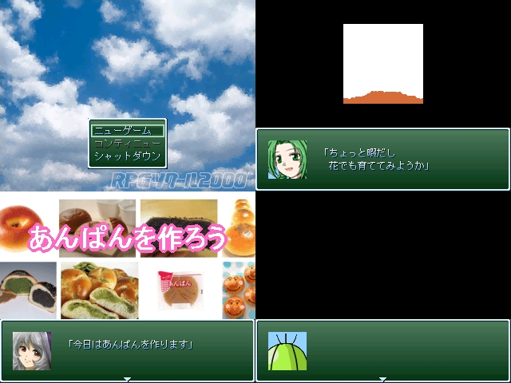

No.44-ｋｓｇ３本仕立て

■ｋｓｇ３本仕立て 腐った黄色
紹介文
さーて、今回のｋｓｇは ・もしも花を育てようと思ったら ・もしもエイプリルフールだったら ・もしもアンパンをｔｋろうとしたら の３本です。 じゃんけんぴょん…ぐふふふふふふ ――のつもりでしたが、３本ではなくなりました。すみません 。 それからタイトル間違えてました。３本仕立てじゃなくて３本 立てです。すみません。
管理人から一言: 右下のサボテン、なんか言えよｗｗｗ
感想掲示板
<<前 戻る 次>>
© VIPRPG